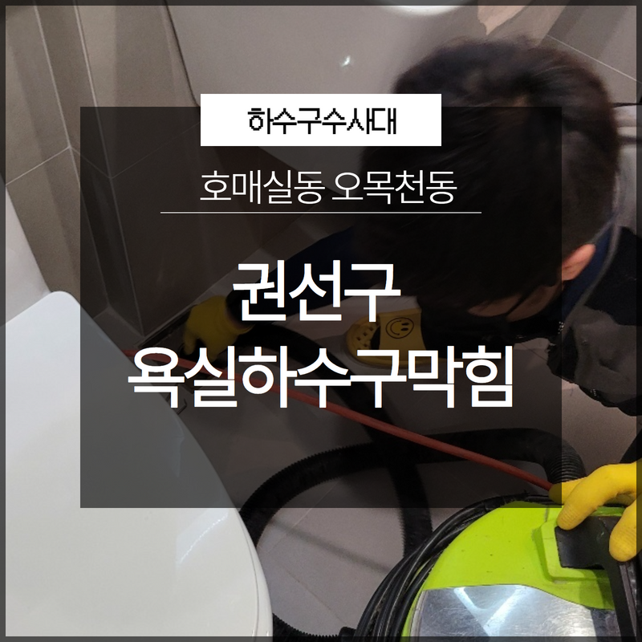
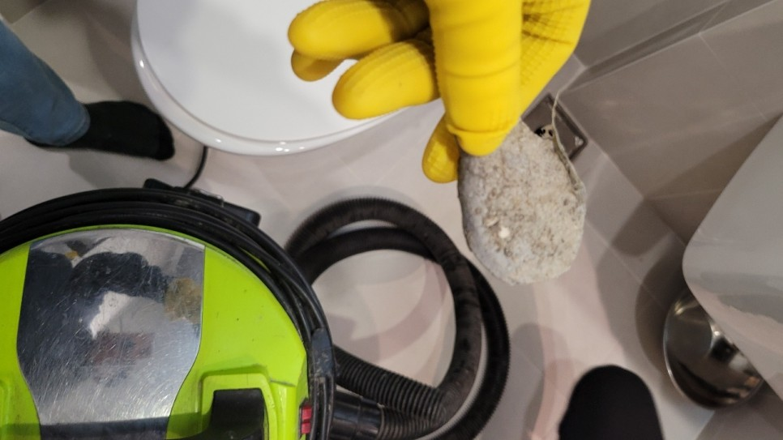
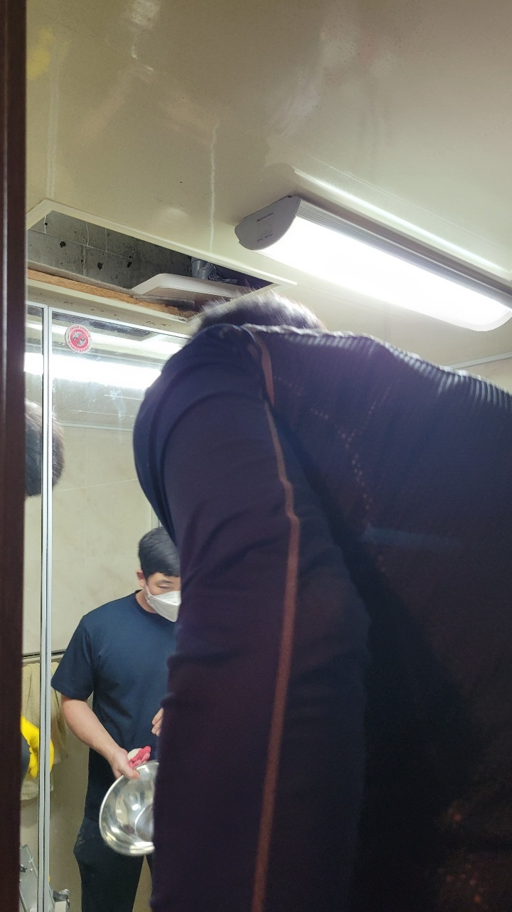

🏠 권선구 욕실하수구막힘 호매실동 오목천동 완벽하게 해결해줄 수 있는 곳
용인 하수구막힘 전문 시공 후기

📋 작업 개요
- 위치: 용인
- 서비스 유형: 하수구막힘, 배관막힘, 뚫는업체
- 작업 일시: 2023. 7. 5. 21:52
- 업체명: 하수구수사대 (010-5615-2118)
🔍 문제 상황
안녕하세요. 하수구수사대입니다 반갑습니다!
처음 배관을 설치하면 깨끗한 상태이기에 이물질이 잘 붙지 않지만 오래 사용한 하수구는 각종 유분기나 기름때 등이 쌓이게 되어 시간이 지나면서 이물질이 크고 단단해지는 형태로 변해 권선구 욕실하수구막힘 호매실동 오목천동 막힘 현상이 발생합니다.
막힘 현상은 오랜 시간 이물질이 쌓이고 단단하게 고착되는 현상이 시작되고 있었다고 판단할 수 있기에 집에서 스스로 해결하는 것이 힘들고 순간적으로 해결된 것으로 보일 수 있으나 같은 문제가 반복되는 상황이 일어나게 됩니다. 하수구 문제가 발생하였을 때에는 하수구수사대와 같은 전문 업체를 통해 작업 진행을 함으로써 빠르고 완벽한 해결의 도움을 받을 수 있습니다.

🔎 원인 분석
💡 전문가 진단: 작업이 정상적으로 진행된다면
의뢰를 주신 권선구 욕실하수구막힘 호매실동 오목천동 작업 현장을 방문해서 내시경을 통해 배관 상태를 확인해 보니 배수 통로마다 단단한 고착물이 붙어있는 것을 발견할 수 있었습니다. 이미 오랜 시간 단단하게 굳은 상태의 이물질은 분쇄를 통해 직접적인 제거를 하는 것이 가장 효과적인 방법입니다. 전문장비인 플렉스 샤프트를 이용하여 안전하고 하수구에 무리 없는 스케일링 작업을 시작하였습니다.
작업이 정상적으로 진행된다면
배수가 되는 메인 통수뿐만 아니라 벽면 주변까지 시원하게 뚫려 배관을 새것처럼 만드는 효과가 있어 한 번의 작업으로 배관을 새것처럼 만들어 다시 처음부터 오래 사용이 가능하며, 재발 가능성이 없습니다. 샤프트기 앞쪽에 내시경을 탑재해 고착물의 위치를 정확히 확인하면서 깨끗하게 제거를 할 수 있습니다. 샤프트기 몸통 홈에 전동드릴을 탑재해서 드릴을 작동시켜 연결된 선의 끝부분 헤드에 노커체인이 달려 빠른 회전으로 고착물을 잘게 분쇄해 주는 전문 장비입니다.
가정에서 셀프로 해결을 해본다고 보통 옷걸이와 같은 날카로운 도구를 이용해 하수구를 긁어내는 일들이 흔하게 발생하기도 합니다. 그런 방법의 권선구 욕실하수구막힘 호매실동 오목천동 셀프 작업은 배관에 흠집이 나는 등의 손상을 주게 됩니다. 그러나 샤프트기의 노커체인은 뭉툭하게 생겨 이물질만 정확하게 제거하는 장비이기에 보다 안전하고 하수구의 손상 없는 작업을 진행할 수 있겠습니다.

🔧 작업 과정
일반적인 장비로는 배관 벽면의 손상 위험이 발생할 수 있습니다.
일부 이물질이 남게 되는 경우가 발생하지만, 하수구수사대의 스케일링 작업 진행은 전문 장비를 이용해 이물질을 전혀 남기지 않고 깨끗한 작업의 도움을 받을 수 있으며 재발 가능성도 없어 안심할 수 있습니다. 샤프트기로 분쇄 후 석션기를 통해 이물질을 다 흡입하여 말끔하게 정리까지 도와드리고 있습니다. 자잘한 이물질도 배관으로 흘려보내지 않고 외부로 다 흡입하여 처리해 드리기에 깨끗한 배관을 유지할 수 있어 믿고 맡길 수 있겠습니다.
욕실막힘 현상의 원인은
주로 머리카락이나, 석회, 오랜 기름때가 주를 이루며 이번 작업 현장도 주된 원인은 동일했습니다. 거름망을 배수구 위에 씌워 이물질이 쉽게 들어가지 않도록 도와드렸으며 사후 관리 방법과 올바른 사용법에 대해서도 상세하게 안내를 도와드렸습니다.
권선구 욕실하수구막힘 호매실동 오목천동 잔여물을 제거한 욕실에 많은 양의 물을 한꺼번에 흘려내보내는 테스트를 통해 배수가 원활하게 되는 것까지 확인하면서 작업을 마무리했습니다. 권선구 욕실하수구막힘 호매실동 오목천동 의뢰를 하신 고객님께서도 시원하게 흘러내려가는 물을 보면서 매우 흡족해하셨습니다.


✅ 작업 완료
일생 생활을 하시다 욕실하수구막힘 현상이 발생하게 되면 당황하지 마시고
전문장비를 다량 보유한 하수구수사대에 연락하시어 발 빠른 도움을 받으시길 바라겠습니다.


⚠️ 하수구 배관 막힘 예방 및 관리 가이드
- ✅ 머리카락, 비닐, 물티슈 등 물에 분해되지 않는 이물질은 하수구 유입을 절대 금지해 주세요.
- ✅ 하수구 거름망을 씌우고 모여진 이물질은 주기적으로 쓰레기통에 바로 비워주셔야 합니다.
- ✅ 배관 노후가 심할 경우 이물질이 더 쉽게 걸리므로 주기적인 배관 세척(고압세척 등)을 권장합니다.
- ✅ 작업 후 1년 이내 재발 시 하수구수사대에서 무상 A/S 보증 서비스를 제공합니다.
💡 핵심 정리
- 확실한 장비 작업(내시경 점검 및 샤프트 스케일링)으로 원인을 뿌리 뽑습니다.
- 작업 후 1년 이내에 동일한 부위 재발 시 100% 무상 A/S 서비스를 보장합니다.
- 서울 · 경기 · 인천 전 지역에 24시간 언제든 긴급 출동할 수 있도록 항시 대기 중입니다.
❓ 자주 묻는 질문 (FAQ)
🚨 용인 하수구막힘 문제로 고민이신가요?
정확한 원인 진단과 확실한 시공으로 재발 없는 해결을 약속드립니다.
24시간 긴급 출동 | 서울 · 경기 · 인천 전지역 | 1년 내 재발 시 무상 A/S